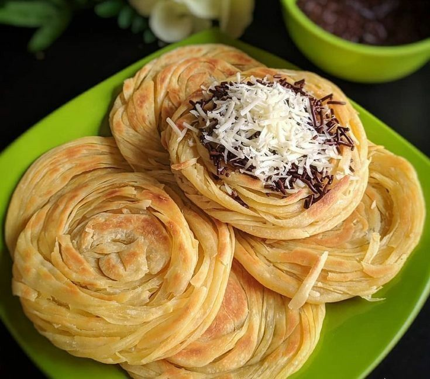
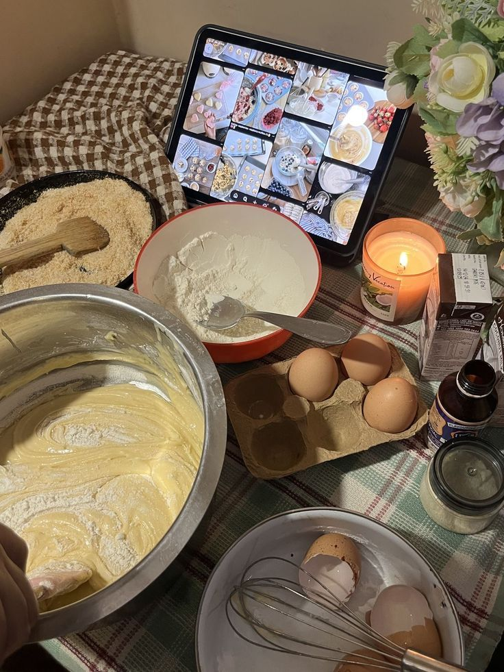
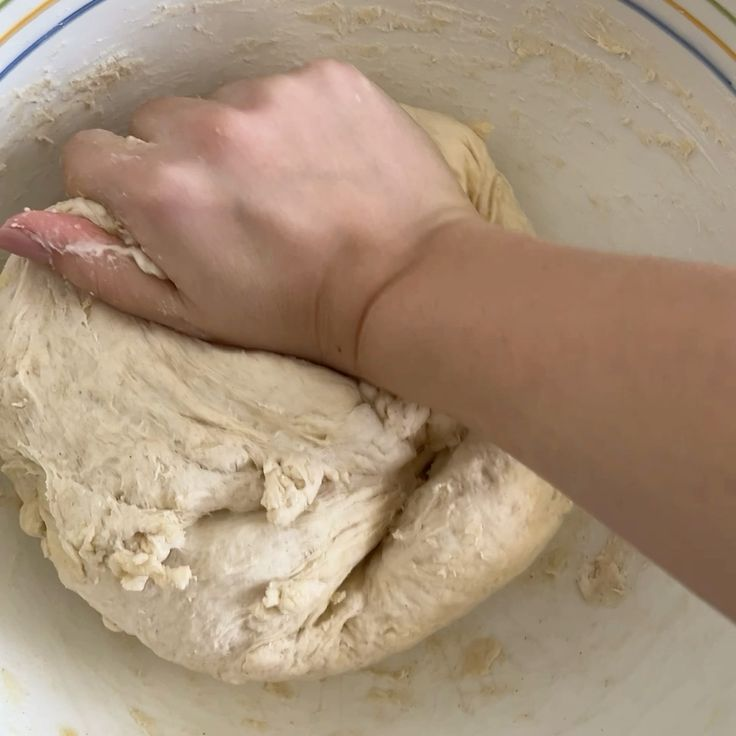
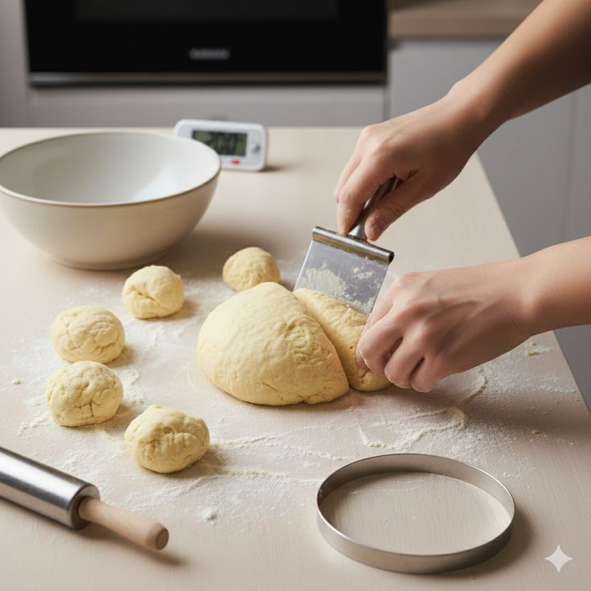

Resep Kue Maryam
Bahan-bahan:
- 250 gr tepung terigu
- 1 butir telur
- 3 sdm margarin, lelehkan
- 100 ml air hangat
- 2 sdm susu bubuk (opsional)
- 1/2 sdt garam
- Margarin leleh untuk olesan
- Minyak untuk merendam

Langkah-langkah
-
Campur semua bahan roti jadi satu.

-
Uleni sampai kalis. Diamkan adonan selama beberapa saat.

-
Tipiskan adonan sesuai ukuran yang diinginkan.
